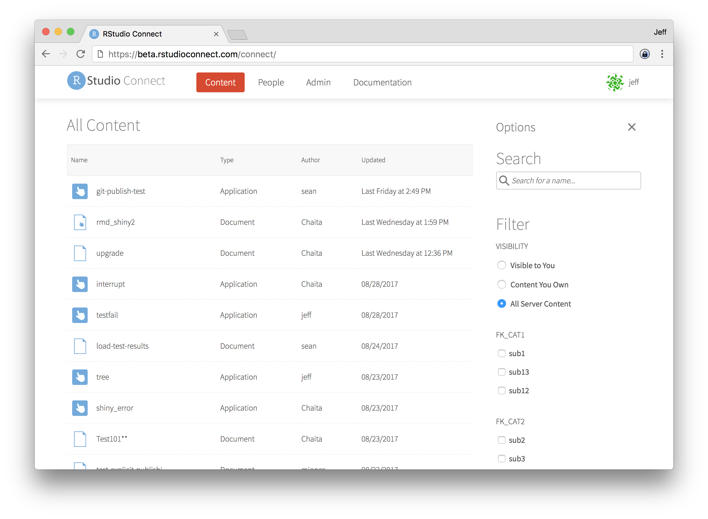

2017-09-06
We’re pleased to announce support for Kerberos in RStudio Connect: version 1.5.6. Organizations that use Kerberos can now run Shiny applications and Shiny R Markdown documents in tailored processes that have access only to the appropriate resources inside the organization.

The notable changes this release include:
[Applications].ExplicitPublishing setting to revert this behavior.[Applications].ShinyErrorSanitization setting to revert this behavior. See the Shiny documentation for more information about Shiny error sanitization.memberof. Additionally, improved LDAP logging and error handling.[Authentication].ChallengeResponseEnabled to true to enable this feature.[Server].EmailSubjectPrefix setting. The default is still [RStudio Connect].RunAs, falling back to the system Applications.RunAs if none is specified.You can see the full release notes for RStudio Connect 1.5.6 here.
Upgrade Planning
There are no special precautions to be aware of when upgrading from v1.5.4. You can expect the installation and startup of v1.5.6 to be complete in under a minute.
If you’re upgrading from a release older than v1.5.4, be sure to consider the “Upgrade Planning” notes from those other releases, as well.
If you haven’t yet had a chance to download and try RStudio Connect we encourage you to do so. RStudio Connect is the best way to share all the work that you do in R (Shiny apps, R Markdown documents, plots, dashboards, Plumber APIs, etc.) with collaborators, colleagues, or customers.
You can find more details or download a 45 day evaluation of the product at https://www.rstudio.com/products/connect/. Additional resources can be found below.